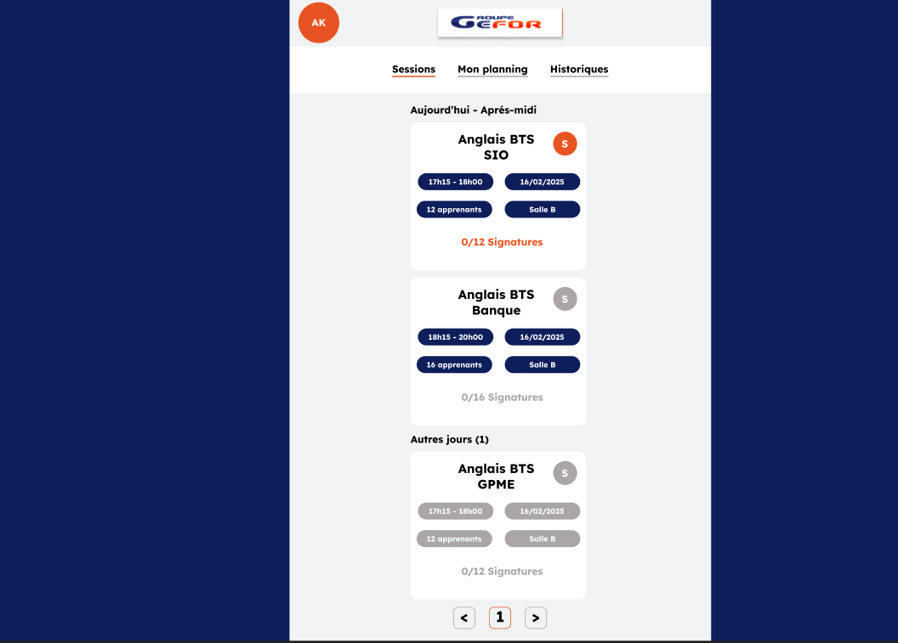
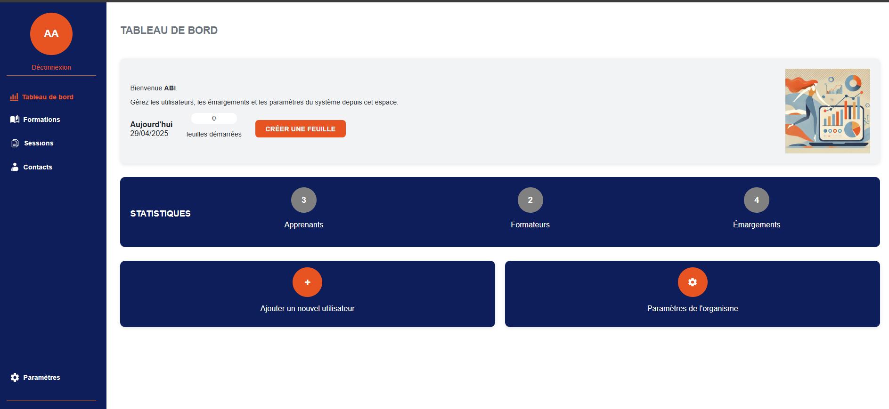
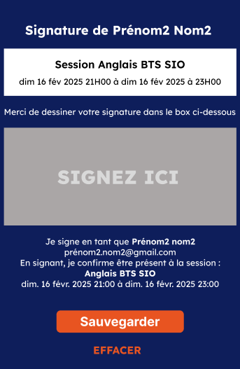
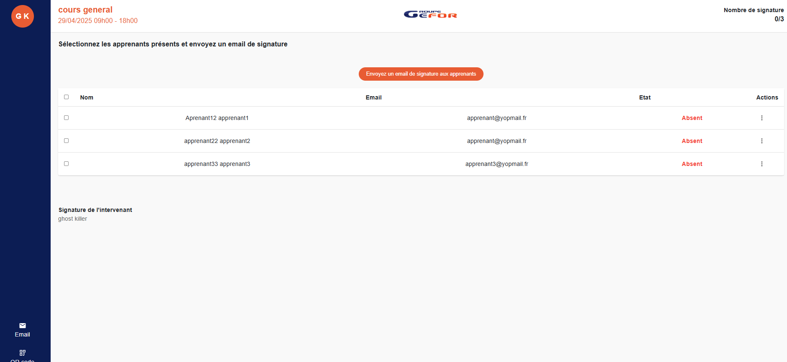

Dans le cadre du workshop mobile, j'ai eu la responsabilité de développer le back-end de l'application. L'API a été construite avec Symfony et expose des endpoints REST consommés par l'application mobile de l'équipe. L'architecture suit le pattern MVC : les contrôleurs gèrent les routes, les entités Doctrine modélisent la base de données, et les repositories centralisent les requêtes. Chaque ressource (adhérent, coach, séance) dispose de ses propres endpoints CRUD sécurisés, retournant des réponses JSON normalisées grâce au composant Serializer de Symfony.


L'entité Adhérent est au cœur de l'application. Elle stocke les informations personnelles de chaque membre (nom, prénom, email, date de naissance). Le back-end expose des routes permettant de lister, créer, modifier et supprimer des adhérents. La validation des données est assurée par les contraintes Symfony (Assert), garantissant l'intégrité des informations avant toute persistance en base de données via Doctrine ORM. Un système de pagination est également intégré pour optimiser les performances lors de la récupération de grandes listes.
L'entité Séance représente chaque cours ou entraînement planifié. Elle est liée aux entités Coach et Adhérent via des relations Doctrine (ManyToOne / ManyToMany). Les endpoints REST permettent à l'application mobile d'afficher le planning, de s'inscrire à une séance ou d'en consulter les détails (date, heure, lieu, nombre de places disponibles). La logique métier (vérification des places, gestion des conflits d'horaire) est encapsulée dans des services Symfony dédiés, séparant clairement la logique métier des contrôleurs.


L'inscription des utilisateurs est gérée côté back-end via un endpoint dédié
qui enregistre le compte, hache le mot de passe avec bcrypt
et retourne un token JWT (JSON Web Token) signé. Ce token est
ensuite envoyé dans chaque requête de l'application mobile pour authentifier
l'utilisateur. Le bundle LexikJWTAuthenticationBundle est
utilisé pour générer et valider les tokens. Les routes sensibles sont protégées
par des pare-feux Symfony configurés dans security.yaml,
garantissant que seuls les utilisateurs authentifiés peuvent accéder aux
ressources protégées.